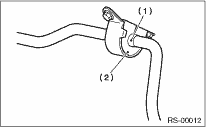

REAR SUSPENSION > Rear Stabilizer
1. Install in the reverse order of removal.
NOTE:
• Use new nuts.
• Install the stabilizer bushing while aligning it with the paint mark on the stabilizer.
• When installing, make sure that the stabilizer bushing and stabilizer are labeled with the same identification marks (paint mark).

|
(1) |
Paint mark of the stabilizer |
|
(2) |
Stabilizer bushing identification color |
2. Always tighten the stabilizer bushing in the state where the vehicle is at curb weight and the wheels are in full contact with the ground.
Tightening torque:
Stabilizer link to rear lateral link
45 N·m (4.6 kgf-m, 33 ft-lb)
Stabilizer to stabilizer bracket
25 N·m (2.5 kgf-m, 18.1 ft-lb)